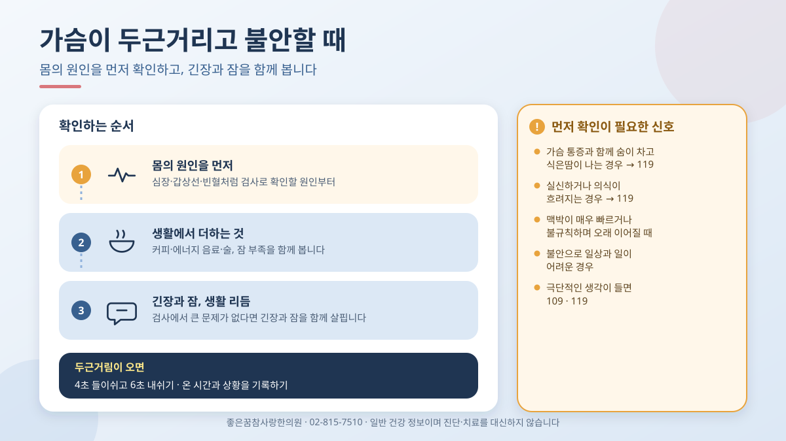

가슴이 두근거리고 불안하면 언제 어떤 상황에서 시작되는지, 카페인과 잠, 갑상선과 심장 질환 가능성을 먼저 확인하고, 가슴 통증과 실신, 숨참이 있으면 바로 119나 응급실을 이용해야 합니다.
여쭙는 것
- 언제, 어떤 상황에서 두근거리나요? (커피 뒤, 긴장할 때, 밤, 운동할 때)
- 얼마나 오래 이어지고 어떻게 가라앉나요?
- 카페인과 음주, 잠은 어떤가요?
생활에서 해 볼 것
- 커피와 에너지 음료를 하루 한 잔 이하로 줄여 보기
- 두근거림이 오면 4초 들이쉬고 6초 내쉬는 호흡을 몇 번 하기
- 두근거림이 온 시간과 상황, 이어진 시간 기록하기
한의원에서 함께 살필 것
- 검사에서 큰 이상이 없었지만 긴장하면 가슴이 두근거리고 숨이 가빠지는 경우, 호흡과…
- 불안이 잦아 잠을 설치는 경우, 잠의 리듬과 생활 습관을 함께 살핍니다.
- 두근거림과 함께 소화가 예민한 경우, 식사 습관과 몸의 긴장을 함께 살핍니다.
먼저 확인이 필요한 신호
- 가슴 통증과 함께 숨이 차고 식은땀이 나는 경우
- 실신하거나 의식이 흐려지는 경우
- 맥박이 매우 빠르거나 불규칙하며 오래 이어지는 경우

가슴이 두근거리고 불안하면 몸의 문제인지 마음의 문제인지 헷갈리기 쉽습니다. 안전을 위해 심장이나 갑상선 같은 몸의 원인을 먼저 확인하고, 검사에서 큰 문제가 없다면 긴장과 잠, 생활 리듬을 함께 살핍니다. 가슴 통증과 숨참, 식은땀이 함께 오면 기다리지 말고 바로 119를 부르세요.
왜 이런 불편이 생길 수 있나요
- 긴장하거나 불안하면 몸이 위기 상황처럼 반응해 심장이 빨리 뛰고 숨이 가빠질 수 있습니다.
- 커피, 에너지 음료, 술, 잠 부족은 두근거림을 더 잘 느끼게 만들 수 있습니다.
- 갑상선 기능 항진이나 부정맥, 빈혈처럼 검사로 확인해야 하는 원인도 있습니다.
- 갑자기 강한 불안과 두근거림이 몰려오는 공황 증상이 있는 경우도 있습니다. 한의학에서는 이런 두근거림을 심계라 부르며 긴장과 잠, 몸의 기운을 함께 살핍니다.

자주 하는 오해
- 두근거림은 모두 마음 탓이라고 여기기 쉽지만, 부정맥이나 갑상선 기능 항진, 빈혈처럼 검사로 확인할 원인이 있어 순서대로 확인합니다.
- 검사에서 이상이 없다는데 계속 두근거리면 괜히 예민한 것 같다고 자책하는 분이 있지만, 긴장과 잠 부족, 카페인만으로도 실제로 두근거림을 느낄 수 있습니다.
- 스마트워치 맥박만 보고 괜찮다거나 큰일이라고 판단하기 쉽지만, 기기 수치는 참고용이라 불편이 이어지면 심전도 같은 검사를 받아 보시는 편이 좋습니다.
- 불안할 때 숨을 크고 많이 들이쉬어야 한다고 여기기 쉽지만, 너무 빠르고 깊게 쉬면 어지럽고 손이 저릴 수 있어 내쉬는 숨을 길게 하는 편이 좋습니다.
예를 들면 이런 경우입니다
- 예를 들어 마감이 몰린 주에 커피를 하루 서너 잔씩 마시며 밤마다 가슴이 두근거려 잠을 설치는 직장인이라면, 커피 마시는 시간과 양, 잠든 시간을 함께 정리해 봅니다.
- 예를 들어 시험 날짜가 다가오면서 책상 앞에만 앉으면 가슴이 뛰고 숨이 답답한 수험생이라면, 공부 시간표와 잠, 쉬는 시간의 호흡을 함께 살핍니다.
- 예를 들어 밤에 누우면 심장 뛰는 느낌이 크게 느껴져 걱정된다는 어르신이라면, 복용 중인 약과 심전도 검사 여부를 먼저 확인하고 필요하면 순환기내과 진료를 안내합니다.

먼저 이렇게 여쭙니다
- 언제, 어떤 상황에서 두근거리나요? (커피 뒤, 긴장할 때, 밤, 운동할 때)
- 얼마나 오래 이어지고 어떻게 가라앉나요?
- 카페인과 음주, 잠은 어떤가요?
- 갑상선이나 심장 질환 진단을 받은 적이 있나요?
- 체중이 줄거나 열감과 땀이 늘었나요?
스스로 점검해 보세요
- 커피나 에너지 음료를 마신 뒤 두근거림이 잦다
- 긴장되는 일정 전에 두근거림이 심해진다
- 누워서 잠들려 할 때 심장 뛰는 느낌이 크게 느껴진다
- 두근거림과 함께 손이 떨리거나 땀이 많아졌다
- 잠이 6시간이 안 되는 날이 잦다
- 두근거림이 올까 봐 외출이나 특정 장소를 피하게 된다
- 심전도나 갑상선 검사를 받은 적이 없다
가슴 통증과 숨참, 식은땀, 실신이 있다면 바로 119를 부르세요. 해당하는 항목은 진료 때 말씀해 주시면 상담이 쉬워집니다.

일상에서 먼저 해 볼 수 있는 것
- 커피와 에너지 음료를 하루 한 잔 이하로 줄여 보기
- 두근거림이 오면 4초 들이쉬고 6초 내쉬는 호흡을 몇 번 하기
- 두근거림이 온 시간과 상황, 이어진 시간 기록하기
- 잠자는 시간을 일정하게 하고 늦은 밤 음주 피하기
- 하루 20~30분 가볍게 걷기
한의원에서 함께 살필 수 있는 경우
- 검사에서 큰 이상이 없었지만 긴장하면 가슴이 두근거리고 숨이 가빠지는 경우, 호흡과 긴장 정도를 함께 살핍니다.
- 불안이 잦아 잠을 설치는 경우, 잠의 리듬과 생활 습관을 함께 살핍니다.
- 두근거림과 함께 소화가 예민한 경우, 식사 습관과 몸의 긴장을 함께 살핍니다.
좋은꿈참사랑한의원에서는 병원 검사 결과와 복용 중인 약을 먼저 확인하고, 두근거림이 오는 상황을 충분히 듣습니다. 진맥을 기본으로 하고 필요하다고 판단될 때 설진을 더해 살핀 뒤 침이나 한약 상담 등 맞는 방법을 함께 정하며, 정신건강의학과 치료를 받고 있다면 그 치료를 먼저 이어 가시도록 안내합니다.
첫 방문에는 두근거림이 오는 상황과 이어지는 시간, 카페인과 잠, 복용 중인 약을 먼저 여쭙고, 받으신 심전도나 갑상선 검사 결과를 확인합니다. 이어서 진맥과 설진으로 몸 상태를 살피고, 필요하다고 판단되면 혈압과 맥박을 재거나 원내 혈액 검사로 기본 수치를 보며, 심장 검사가 먼저라고 보이면 순환기내과를 안내합니다. 가져오신 두근거림 기록을 함께 보며 잦은 시간과 상황을 짚어 보고, 오늘 정한 치료 방향과 집에서 해 볼 호흡, 생활 조정을 설명드립니다.

얼마나 지켜보고, 언제 상담하면 좋을까요
- 카페인과 잠을 조정하면서 1~2주 정도 두근거림이 온 시간과 상황을 기록해 보세요.
- 2주가 지나도 거의 매일 두근거리거나, 불안 때문에 외출과 일이 어렵다면 병원 검사와 진료를 받아 보시길 권합니다.
- 가슴 통증, 숨참, 식은땀, 실신이 있거나 매우 빠르고 불규칙한 맥이 오래 이어지면 기다리지 말고 119나 응급실을 이용하세요.
이렇게 기록해 오시면 상담이 쉬워집니다
- 두근거림이 온 날짜와 시간, 하던 일, 이어진 시간
- 그날 마신 커피·술과 잠든 시간
- 심전도, 갑상선 등 병원 검사 결과지
- 복용 중인 약 이름

이런 증상은 먼저 확인이 필요합니다
- 가슴 통증과 함께 숨이 차고 식은땀이 나는 경우
- 실신하거나 의식이 흐려지는 경우
- 맥박이 매우 빠르거나 불규칙하며 오래 이어지는 경우
- 불안으로 일상과 일이 어려운 경우
가슴 통증과 실신은 바로 119나 응급실을 이용하세요. 복용 중인 약은 처방한 의사와 상의 없이 줄이거나 끊지 않으며, 극단적인 생각이 들면 자살예방상담전화 109나 119에 바로 연락하세요.
함께 읽으면 좋은 글
- 진맥은 혈압계나 스마트워치로 재는 맥박과 무엇이 다른가요?
- 의욕이 없고 번아웃처럼 지칠 때는 한의원에서 무엇을 먼저 묻나요?
- 스트레스를 받으면 속이 아프고 설사나 변비가 반복될 때는 어떻게 살피나요?
한눈에 보는 표
| 구분 | 핵심 |
|---|---|
| 여쭙는 것 | 언제, 어떤 상황에서 두근거리나요? (커피 뒤, 긴장할 때, 밤, 운동할 때) 얼마나 오래 이어지고 어떻게 가라앉나요? |
| 생활에서 해 볼 것 | 커피와 에너지 음료를 하루 한 잔 이하로 줄여 보기 두근거림이 오면 4초 들이쉬고 6초 내쉬는 호흡을 몇 번 하기 |
| 한의원에서 함께 살필 것 | 검사에서 큰 이상이 없었지만 긴장하면 가슴이 두근거리고 숨이 가빠지는 경우, 호흡과 긴장 정도를 함께 살핍니다. 불안이 잦아 잠을 설치는 경우, 잠의 리듬과 생활 습관을 함께 살핍니다. |
| 먼저 확인이 필요한 신호 | 가슴 통증과 함께 숨이 차고 식은땀이 나는 경우 실신하거나 의식이 흐려지는 경우 |
자주 묻는 질문
두근거림은 한의원에서 어떻게 살피나요?
상황과 시간대, 카페인과 잠, 스트레스를 함께 여쭙고 병원 검사가 필요하면 먼저 안내합니다.
병원 검사를 먼저 받아야 하나요?
가슴 통증, 숨참, 실신이 있거나 자주 반복되면 먼저 병원 검사를 권합니다.
정신건강의학과 약을 먹고 있어요.
약은 임의로 끊거나 줄이지 마시고 처방한 의사와 상의하세요. 진료 때 약 이름을 알려 주세요.
심계가 무엇인가요?
가슴이 두근거리는 느낌을 가리키는 한의학 표현입니다. 몸의 원인을 먼저 확인한 뒤 긴장과 잠을 함께 살필 때 씁니다.
이 글은 일반적인 건강 정보이며 개인의 진단이나 치료를 대신하지 않습니다. 증상이 있거나 복용 중인 약이 있다면 진료를 통해 확인하세요. 치료 효과는 개인마다 다를 수 있습니다.
작성 기준: 일반적으로 알려져 있는 건강 정보를 참고해 정리했습니다(대표원장 감수). 증상 기록은 1~2주 동안 하루 1회, 비슷한 시간에 적어 오시면 지난 상태와 비교하기 쉽습니다.
좋은꿈참사랑한의원은 재진 때 지난번 이야기부터 이어서 여쭙니다. 진료시간과 예약은 오시는 길에서 확인하세요.
어디서 상담받을 수 있나요?
좋은꿈참사랑한의원은 서울 동작구 만양로2길 2 신성빌딩 3층·5층(서울 동작구 상도동, 7호선 상도역 3번 출구 근처)에 있습니다. 한의사 3명(이종호 대표원장, 조영기 수석진료원장, 정원영 진료원장)이 진료합니다. 진료시간은 평일 09:30~20:00(점심 13:00~14:00), 토·일·공휴일 09:30~15:00이며, 방문 전 전화로 확인을 권합니다. 예약은 네이버 예약, 카카오톡 상담, 전화 02-815-7510로 받습니다.